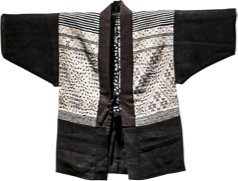
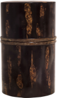

“ศิลปหัตถกรรมอันงดงามแห่งโทโฮขุญี่ปุ่น”
เป็นนิทรรศการที่จัดขึ้นเพื่อระลึกถึงโอกาสครบรอบเหตุการณ์แผ่นดินไหวและสึนามิที่เกิดขึ้นที่โทโฮขุเมื่อวันที่ 11 มีนาคม 2554 ซึ่งทำให้ภูมิภาคโทโฮขุที่ขึ้นชื่อด้านความงดงามของเทือกเขา ทิวทัศน์ท้องทะเลและอุดมไปด้วยวัฒนธรรมท้องถิ่นและประวัติศาสตร์ ได้รับความเสียหายและถูกทำลายเป็นวงกว้างอย่างไม่เคยเกิดขึ้นมาก่อน เกิดความสูญเสียอย่างใหญ่หลวง วัฒนธรรมด้านศิลปหัตถกรรมและการผลิตได้รับผลกระทบอย่างรุนแรง ผู้คนท้องถิ่นต่างได้รับผลกระทบจากภัยธรรมชาติในครั้งนั้น ทว่าพวกเขาได้ร่วมมือร่วมใจทำงานร่วมกันอย่างใกล้ชิด เพื่อสรรสร้างและมุ่งมั่นสร้างความสงบและความปกติสุขให้กลับคืนมาสู่ชีวิตของพวกเขาให้เร็วที่สุดเท่าที่จะทำได้
นิทรรศการนี้ชวนให้เราระลึกถึงมรดกทางศิลปะและหัตถกรรมอันเป็นเอกลักษณ์อันดึงดูดของโทโฮขุอีกครั้ง การจัดแสดงผลงานนานาประเภท เช่น เครื่องเคลือบ เครื่องเขิน สิ่งทอ งานโลหะ งานหัตถกรรมจากไม้ และไม้ไผ่ จะทำให้ผู้เข้าชมเพลิดเพลินไปกับความหลากหลายและโลกอันวิจิตรบรรจงของประเพณีแบบโทโฮขุ
-
 เครื่องเขิน
เครื่องเขิน -
 ภาชนะดินเผา
ภาชนะดินเผา -
การปักผ้า
-
 การมัดย้อมและการทอผ้า
การมัดย้อมและการทอผ้า -
 การสานตะกร้า
การสานตะกร้า -
การตัดผ้าและเปลือกไม้
-
 การหลอมเหล็ก
การหลอมเหล็ก -
การวาดระบายสี
-
ศิลปิน
กลุ่มมินเงอิ
ผลงานที่รวมอยู่ในนิทรรศการนี้เสนอโอกาสที่จะค้นพบเทคนิคชั้นสูงทางด้านศิลปหัตถกรรมแบบดั้งเดิมที่ฟูมฟักกันมาในภูมิภาคโทโฮขุ และความงามของอุปกรณ์เครื่องใช้สอยในชีวิตประจำวันที่ใช้กันมาในญี่ปุ่นตั้งแต่อดีตกาลอีกครั้ง ผลงานศิลปหัตกรรมเหล่านี้จะช่วยให้เราเข้าใจภูมิปัญญาชาวบ้านที่ได้มาจากการใช้ชีวิตอย่างใกล้ชิดกับธรรมชาติ ทักษะฝีมือ และความชำนาญที่พัฒนาขึ้นจากภูมิปัญญาเหล่านั้นได้มากยิ่งขึ้น
เราใคร่ขอแสดงความขอบคุณจากใจไปยัง คุณริวอิจิ มัตทซึบาระ หัวหน้าภัณฑารักษ์ของงานนิทรรศการ รวมทั้งผู้คนทั้งหลายที่ให้คำแนะนำและความร่วมมืออันทรงคุณค่ายิ่ง เราขอถือโอกาสนี้แสดงความขอบคุณไปยังข้อความและความช่วยเหลืออันอบอุ่น และให้กำลังใจที่มาจากต่างประเทศอันเนื่องมาจากภัยพิบัติแผ่นดินไหว
ความเป็นจริงยังคงหนักหน่วงในหลากหลายพื้นที่ของภูมิภาคนี้ ทำให้ยังมีผู้คนอาศัยอยู่ในศูนย์อพยพและตามสถานที่ต่างๆ อันห่างไกลไปจากบ้านเดิมของเขา เรายังทำงานร่วมกับผู้คนของภูมิภาคโทโฮขุต่อไป และให้การสนับสนุนความพยายามที่จะสร้างพื้นที่ให้ฟื้นคืนดังเดิมให้เร็วที่สุดเท่าที่เป็นไปได้